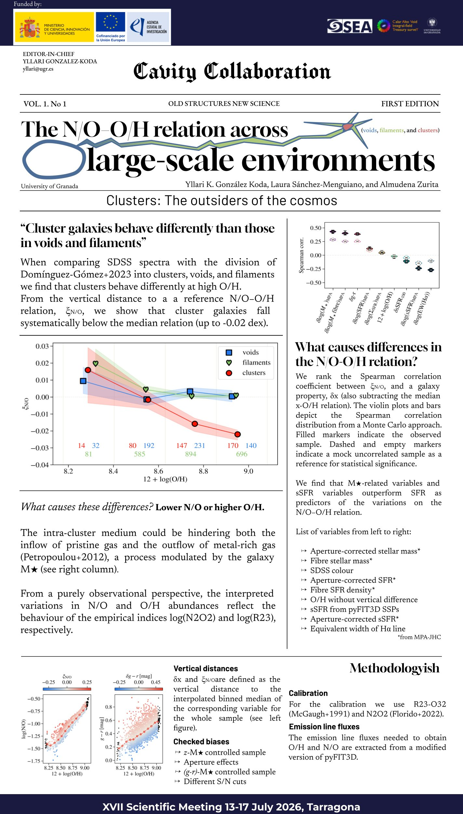
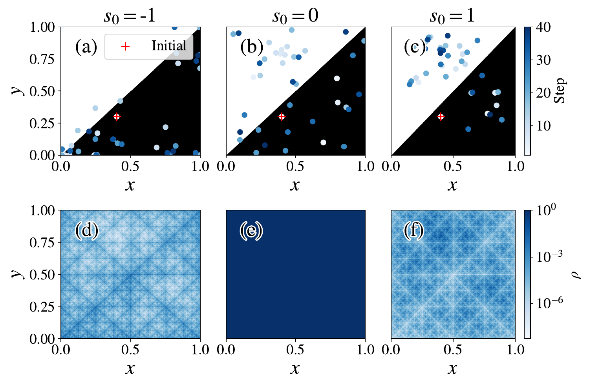

Science
Don't know how, but It sure looks like I'm a scientist
my ORCID my Google Scholar
(July 2025) The N/O-O/H relation across large-scale environments: How is nitrogen and oxyen affected by the cosmic web structure?

(June 2026) Doob in d-dimensions and chaotic maps: There is a Universe in which you know exactly how and when a hurricane will happen. In this paper we see how to find it
(only if you can describe the hurricane as a d-dimensional chaotic map)

(Dec. 2025) Chronogal III: The Milky Way ate another galaxy and I see how and when.